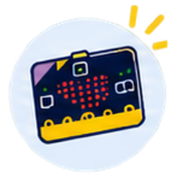

9~10차시
링비트와 AI모델을 활용한
문제해결 작품 제작 및 수업 적용
· ·
지난 시간 정리
7~8차시에 이어서
① 인식
AI 모델
카메라로 촬영한 손동작, 이미지, 표정을 인식하고 그 결과를 마이크로비트에 보냅니다.
핸드포즈 · 이미지분류 · 얼굴인식
핸드포즈 · 이미지분류 · 얼굴인식
블루투스

② 판단
마이크로비트
AI 모델이 보낸 인식 결과에 따라 미리 블록코딩한 명령을 실행합니다.
각도 명령
③ 움직임
서보모터
마이크로비트의 명령에 따라 정해진 방향이나 각도로 움직입니다.
준비물 확인
마이크로비트·링비트·서보 2개,
골판지와 마스킹테이프
아이디어 카드
문장 틀로 쓴 아이디어 한 장.
오늘 자유발명 과제로 이어서 만들 수 있어요.
16:00 ~ 17:50 · 110분
오늘의 흐름
1
과제 고르기
도전과제 7개를 둘러보고 하나를 신청
10분
2
만들기
주어진 재료로 MAKING
40분
3
찍고 제출
30초 영상, MakeCode 주소, 설명
10분
4
함께 보기
작품 발표회
20분
도입
고르기
만들기 ①
쉬는 시간
만들기 ②
찍고 제출
작품 발표회
수업으로
16:0016:1016:2016:5017:0017:1017:2017:40 ~ 17:50
이번 메이킹 활동은 AI 모델과 마이크로비트, 서보모터를 연결하고 작동시키는 방법을 익히는 데 목적이 있습니다.
모든 도전과제에 똑같이
공통 도전 조건
예: 인식 2가지 → 행동 2가지
주먹→P0 서보가 북 치기
보→P1 서보가 딸랑이
내 노트북에서
이 교안에서 바로 신청하고 제출합니다
이 교안 주소
1
주소 열기
내 노트북 크롬에서
2
이름 등록
오른쪽 위 버튼 · 비밀번호 4자리
3
신청하기
도전과제 쪽에서 하나만
4
제출하기
만든 뒤 ‘내 결과물 제출’ 쪽에서
← → 키나 오른쪽 아래 버튼으로 넘기고, 목차로 원하는 쪽에 바로 갑니다.
PART 1
도전과제 고르기
7개 중 하나를 골라 신청합니다.
과제마다 정원이 있으니 먼저 둘러보세요.
16:10 ~ 16:20
도전과제 고르기
도전과제 한눈에 보기
핸드포즈
이미지분류
얼굴인식
자유발명
실시간
신청 현황판
PART 2
만들기
골판지와 마스킹테이프를 활용해 작품을 만들어 보세요.
완성도보다는 AI 모델과 서보모터를 연결하고 작동시키는 경험에 집중해 보세요.
16:20 ~ 17:10 · 쉬는 시간 포함
시작 전에
내 모델에 맞는 코드부터
핸드포즈 · 이미지분류 — 7차시 기본 코드
무한반복
만약데이터 = “클래스 이름”이면
P0 에 서보 값180출력
아니고 만약데이터 = “클래스 이름”이면−
P1 에 서보 값180출력
+
1클래스 이름 두 곳 → 웹앱에서 정한 이름과 똑같이(대소문자까지)
2서보 블록 → 원하는 동작으로(핀·각도)
예제 코드 — 누르면 새 탭에서 열립니다
장치 이름 확인 가장 먼저makecode.microbit.org/S49771-77509-50114-72682
코드 열기
핸드포즈makecode.microbit.org/57559-53483-63617-50743
코드 열기
이미지분류makecode.microbit.org/#editor
코드 열기
얼굴인식예제 코드를 준비하고 있습니다
준비 중
이미지분류는 8차시에 저장한 모델을 모델 가져오기로 불러옵니다.
마이크로비트와 PC로 연결할 때는 링비트 스위치를 끄고, 연결을 해제하고 작동할 때 켭니다.
만들기 40분
짧게, 여러 번 돌려 봅니다
1
떠올리기
인식 2가지, 행동 2가지를 정한다
2
만들기
골판지와 테이프로 거칠게
3
움직이기
AI와 서보를 연결해 돌려 본다
4
고치기
안 되는 곳을 찾아 바로 고친다
만들 때 기억할 것
- 0°를 먼저 보내고 그 위치에 혼(날개)을 끼운다
- 서보 축은 손으로 돌리지 않는다
- 각도 사이 pause는 500ms 이상
- 골판지 팔은 혼에 마스킹테이프로 단단히
막혔을 때
안 될 때 다섯 가지 확인
- 1 · AI 연결용 코드가 들어갔나? 장치 이름 확인 코드와 헷갈리기 쉬워요
- 2 · 내 장치 이름에 연결했나? 이름표의 다섯 글자와 같은지
- 3 · 클래스 이름이 같은가? 코드와 웹앱, 대소문자까지
- 4 · ‘시작’을 눌렀나? 인식을 시작해야 글자가 갑니다
- 5 · 링비트 전원을 켰나? 보낼 땐 끄고, 움직일 땐 켠다
그래도 안 되면
손을 들어 주세요.
분임강사가 갑니다.
손을 들어 주세요.
분임강사가 갑니다.
얼굴인식은? 클래스 이름 대신 숫자가 옵니다. 3번은 몇 번째 자리를 꺼냈는지 확인합니다.
PART 3
찍고 제출하기
30초 영상, MakeCode 주소, 두세 문장 설명.
이 세 가지를 준비해 주세요.
17:10 ~ 17:20
작동 영상
30초 시연 영상 찍기
- 가로로 찍는다
- 웹앱 화면과 작품이 함께 나오게
- 인식 1 → 행동 1, 인식 2 → 행동 2
- 30초 안에 끝낸다
구글 드라이브
업로드 → 공유 → 일반 액세스를 링크가 있는 모든 사용자로 → 링크 복사
유튜브
일부 공개로 업로드 → 공유 → 링크 복사
드라이브 링크가 ‘제한됨’이면 발표 때 재생되지 않습니다.
30초는 이렇게 나눠 보세요
작품 보여 주기
인식 1 → 행동 1
인식 2 → 행동 2
한 번 더
0초5초15초25 ~ 30초
코드 공유
MakeCode 공유 주소 만들기
1
이름 정하기
아래 이름 칸(예: 김하늘-오케스트라)
2
공유 누르기
MakeCode 오른쪽 위 공유 버튼
3
링크 만들기
공유 창에서 링크를 만든다
4
주소 복사
제출 창에 붙여 넣는다
이런 주소가 나오면 성공
https://makecode.microbit.org/_aBcD1234eFgH
S12345-12345-12345-12345처럼 숫자로 된 주소도 됩니다. 공유한 코드는 누구나 볼 수 있으니 개인정보를 넣지 마세요.
장치 이름 확인 코드 말고 오늘 만든 작품 코드의 주소인지 다시 확인하세요.
제출
내 결과물 제출
준비할 네 가지
- 작품 제목
- 간단한 설명 2~3문장
- MakeCode 공유 주소
- 작동 영상 주소
다시 제출하면 새 내용으로 바뀝니다.
실시간
제출 현황
PART 5
수업으로 가져가기
오늘 만든 작품을 우리 반에서 어떻게 쓸까요?
17:40 ~ 17:50
교과 연계 예시
우리 반 수업과 잇기
| 도전과제 | 교과 | 수업 아이디어 |
|---|---|---|
| 손짓 오케스트라 | 음악 | 손짓 신호로 모둠 리듬 합주하기 |
| 분류 챌린지 | 과학 · 환경 | 기준을 정해 물체 나누기, 분리배출 도우미 |
| 움직이는 다리 | 사회 · 과학 | 교통과 생활, 움직이는 구조물 탐구 |
| AI 생명체 | 미술 · 국어 | 표정에 반응하는 캐릭터와 이야기 만들기 |
| 토이스토리 | 국어 · 미술 | 이야기 속 장면을 움직이는 장난감으로 |
| 물건 업그레이드 | 실과 | 생활 속 불편 찾기, 발명 기법 ‘더하기’ |
| 종이컵 변신 | 미술 · 창체 | 재활용 재료로 움직이는 작품 만들기 |
예시입니다. 학년과 교과에 맞게 고쳐 쓰세요.
교실에서
수업 운영 팁
모둠과 역할
2인 1조로 조종(인식)과 관찰·수정을 나눠 맡고 역할을 바꿔 가며 활동합니다.
준비물
마이크로비트·링비트·서보 2개·AAA 건전지 3개, 골판지·마스킹테이프, 카메라 있는 기기, 장치 이름표
시간 배분
1차시 도구 익히기 → 2차시 아이디어 카드 → 3~4차시 만들기·영상·공유
안전
서보 축은 손으로 돌리지 않기 · 칼은 자 위에서 · 보낼 땐 끄고, 움직일 땐 켠다
THANK YOU
수고하셨습니다
고르고, 만들고, 보여 주었습니다.
이제 우리 반 차례입니다.